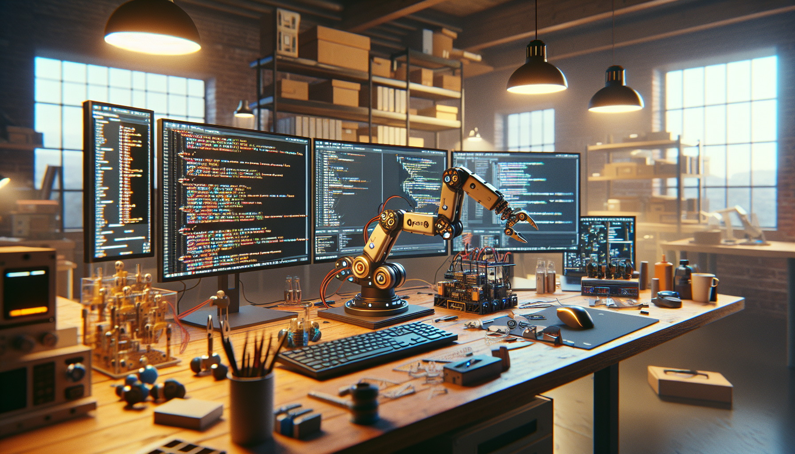

OpenClaw is the kind of project that came from a familiar builder instinct: I wanted something that existed, couldn’t find a version that felt open enough, understandable enough, or hackable enough, so I started building it myself. If you are a developer, maker, or AI enthusiast, you probably know that feeling. You see a gap between what tools promise and what they actually let you do. OpenClaw was my response to that gap.
At its core, OpenClaw is an open-source build that brings together practical engineering, transparent code, and a builder-first mindset. It is not just about shipping software. It is about creating a project that people can inspect, modify, run, and learn from. I wanted OpenClaw to feel like a real workshop on GitHub, not a black box hidden behind polished marketing language.
In this post, I want to explain what OpenClaw is, why I built it, and what I think makes open GitHub builds so valuable right now. This is not a launch-page version of the story. It is the builder-to-builder version.
OpenClaw is an open-source project designed to be explored, forked, and extended. The idea behind it is simple: build a system that is useful in practice, understandable in code, and open enough that others can take it in new directions. Instead of treating the project like a finished product from day one, I approached it as a living build.
That distinction matters. A lot of projects are technically open source, but they are not really open in the way builders need. The code may be public, but the architecture is hard to follow, the setup is painful, the decisions are undocumented, and contributors are left guessing. I wanted OpenClaw to be different. I wanted someone to land on the repository, read through it, and quickly understand both the “what” and the “why.”
For me, OpenClaw represents a few key ideas:
That is why OpenClaw is as much about process as it is about features. The source code matters, of course, but so do the decisions, commits, iterations, and tradeoffs that shape it.
I built OpenClaw because I kept running into the same frustration: too many interesting AI and developer tools felt inaccessible in the wrong ways. Some were proprietary. Some were overengineered. Some looked impressive in demos but became difficult to adapt the moment you tried to use them for your own workflow.
I wanted a project that reflected how real builders work. Most of us are not trying to recreate giant enterprise systems. We are trying to test ideas quickly, understand our stack deeply, and keep enough flexibility to change direction when new opportunities appear. OpenClaw was born from that mindset.
There was also a more personal reason. I like building in public. I like seeing the repo history tell a story. I like when a project shows its rough edges, because rough edges usually mean there is something real underneath. OpenClaw gave me a reason to create something in the open from the start, with all the constraints, revisions, and tradeoffs visible.
That transparency is not just philosophical. It is practical. Open builds create better feedback loops. People can spot issues earlier, suggest cleaner implementations, and understand the context behind decisions. When a project lives on GitHub in a genuine way, the repository becomes more than code storage. It becomes proof of work.
One of the biggest problems in modern AI and software tooling is opacity. You can use a tool without understanding how it works, but the moment you want to customize it, optimize it, or trust it with something important, opacity becomes friction. Builders need visibility.
OpenClaw is my attempt to solve that by making the build itself part of the value. The project is meant to be useful, yes, but it is also meant to be legible. I wanted anyone looking at it to be able to answer questions like:
That sounds basic, but in practice it is surprisingly rare. Too many repos assume context that new contributors do not have. Too many tools optimize for presentation over comprehension. OpenClaw tries to move in the opposite direction. If you are a developer, I want you to be able to read the code and reason about it. If you are a maker, I want you to feel invited to experiment. If you are an AI enthusiast, I want you to be able to see how the pieces fit together rather than treating the system like magic.
From the beginning, OpenClaw had to be open source. Not as a branding decision, but as a design principle. The whole point was to create something that people could inspect, remix, and build on. If the project were closed, it would lose the most important part of its identity.
Open source changes how you build. It forces clarity. It encourages documentation. It makes you think about onboarding, not just implementation. It also keeps you honest. When your code is public, you cannot hide behind vague claims. The repository has to speak for itself.
There is also a bigger reason this matters right now. AI is moving fast, and a lot of the most influential systems are becoming harder to inspect. That creates a weird dynamic where people rely on powerful tools they cannot fully understand or shape. I think open-source AI projects are one of the best counterbalances to that trend. They create spaces where people can learn by doing, not just consume by subscribing.
OpenClaw is my small contribution to that culture. I want it to be a project people can use, but I also want it to be a project people can learn from. That is one of the strongest reasons to put the full source code on GitHub and keep the build visible.
Every project teaches you something, but open projects teach you in public. That can be uncomfortable, but it is also incredibly useful. Building OpenClaw has reminded me of a few things I think many developers already know, even if we do not always say them out loud.
One of the most valuable lessons has been that authenticity scales better than polish in technical communities. Developers and makers do not need every project to look finished. They need signals that it is real, active, and worth their attention. A thoughtful README, a clean commit history, working examples, and visible iteration often matter more than a glossy announcement.
That is how I think about OpenClaw. It is not trying to pretend the hard parts do not exist. It is trying to show the work.
I built OpenClaw for the kind of people who like opening the hood. If you want a sealed product with no decisions to make, this probably is not that. But if you like understanding systems, modifying workflows, and learning from real implementation details, then OpenClaw should feel familiar.
The project is especially relevant for:
In other words, OpenClaw is for builders. People who do not just want to use technology, but shape it. That audience is exactly why I have tried to keep the project grounded, understandable, and openly developed.
There are easier ways to build than doing it in public. Open development creates pressure. It exposes unfinished thinking. It makes every shortcut more visible. But that is also why it matters to me. OpenClaw is not just a repository. It is a commitment to a way of building that values transparency, learning, and community over mystery.
I think we need more projects like that, especially in AI. We need more examples that show the mechanics, not just the marketing. We need more GitHub builds that invite participation. We need more technical work that says, “Here is how I made this. If it helps you, take it further.”
That is the spirit behind OpenClaw. I built it because I wanted something open, practical, and real. I kept building it because I believe that kind of project still matters.
So, what is OpenClaw and why did I build it? OpenClaw is an open-source builder project designed to be transparent, useful, and extensible. I built it because I wanted a system that developers, makers, and AI enthusiasts could actually understand, adapt, and improve. I built it because too many tools feel closed off even when they appear open. And I built it because GitHub should be a place where real work is visible, not just packaged.
If that resonates with how you like to build, then OpenClaw will probably make sense to you immediately. It is not just about the end result. It is about the process, the code, the decisions, and the invitation to participate.
Follow the OpenClaw build on GitHub and see the full source code.